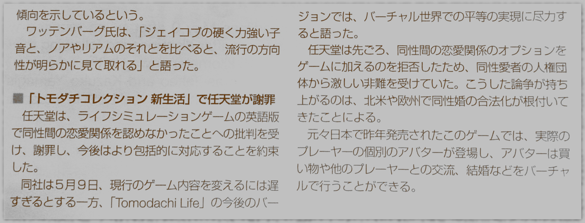

I copy here an article published in Asahi Weekly some weeks ago, titled "Nintendo apologizes for lack of equality in game".
LOS ANGELES (AP) — Nintendo is apologizing and pledging to be more inclusive after being criticized for not recognizing same-sex relationships in English editions of a life simulator video game.
The company said May 9 that while it was too late to change the current game, it was committed to building virtual equality into future versions of "Tomodachi Life."
Nintendo came under fire from gay rights organizations recently after refusing to add same-sex relationship options. The issue arises as legalization of gay marriage has taken hold in North America and Europe.
The game, originally released in Japan last year, features personalized avatars of real players, who can shop, interact with other players, and get married virtually.
Let me sum this up. Nintendo retails worldwide a game on "life" which they developed in Japan, a country where the question of same-sex marriage is largely out of the radar. US LGBT organizations found that same-sex marriage was not depicted in the game and urged the company to update it accordingly. The company complied.
Why did American LGBT organizations ask Nintendo to change their game? If a game was nothing but a product, the story would have been quite short: those who don't like it don't buy it. However, video games are more than this: they are a powerful mass media. They reach a vast audience and they are more immersive than, say, movies or newspapers. As such, they have become a stake in the fabric of consensus.
Consensus is what a society thinks. It emerges from what its individuals think through an unknown process. Sometimes, societies change their mind. Individuals, and then groups of individuals, get to think that the consensus on a given topic is wrong and organize themselves to change it. This precipitates into institutions whose founding goal is to change what everybody thinks on a given topic. But to change what someone thinks, you need an input to his or her mind. This is why these consensus-changing organizations are closely tied to mass media. Their battlefield is the mediasphere.
In the Nintendo story, there was no fight over the question of same-sex marriage, because there was no opposition. The Japanese company did not express an opinion on the matter (it balked to change the game because of development costs). Rather, it published a work upon which the question of same-sex marriage could be discussed. LGBT organizations seized the opportunity, and they were successful: newspapers and websites relayed the story in the US (CBS News, 12 May 2014), in Japan (Asahi Shimbun, 9 May 2014), in France (Le Point, 9 May 2014), in the UK (Eurogamer, 9 May 2014), ...
And so the battle for the mediasphere goes. A battle where consensus shareholders fight among themselves for public attention.

Discussion ¶
Feel free to post a comment by e-mail using the form below. Your e-mail address will not be disclosed.